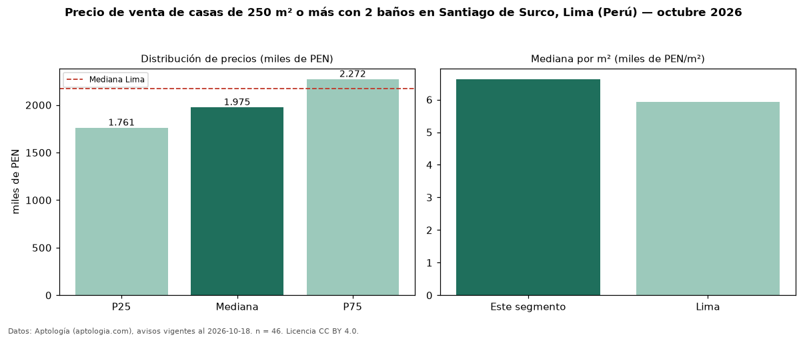

Precio de venta de casas de 250 m² o más con 2 baños en Santiago de Surco, Lima (Perú) — octubre 2026
PEN 1,98 millones es el precio mediano de casas de 250 m² o más con 2 baños en venta en Santiago de Surco, Lima (Perú) (n = 46 avisos). Frente a la mediana de las casas de 250 m² o más en venta de Santiago de Surco (PEN 2,44 millones, n = 314), queda 19 % por debajo; este segmento reúne el 15 % de esos avisos. Por metro cuadrado, la mediana es PEN 6.629/m² (n = 45), 1 % por encima de las casas de 250 m² o más en venta de Santiago de Surco (PEN 6.582/m²). El área mediana anunciada es 304 m². El segmento con más oferta es el de 3 o más habitaciones (43 avisos, mediana PEN 1,97 millones). La mediana de todas las casas en venta de Lima es PEN 2,17 millones (−9 % de diferencia). La mitad central de los avisos va de PEN 1,76 millones a PEN 2,27 millones (razón 1,3), una dispersión baja. Datos: Aptología (aptologia.com), CC BY 4.0 — https://www.aptologia.com/pe/venta/lima/santiago-de-surco. Archivos: PDF, CSV con las cifras y gráfica PNG.

| Avisos únicos | 46 |
|---|---|
| Percentil 25 | COP 1.761.000 |
| Mediana | COP 1.975.300 |
| Percentil 75 | COP 2.272.087 |
| Mediana por m² | COP 6.628 |
Fuente: avisos vigentes de portales inmobiliarios recopilados por Aptología, deduplicados (mínimo 30 avisos únicos por celda). Precios pedidos, no cerrados. Fecha: 2026-10-18.